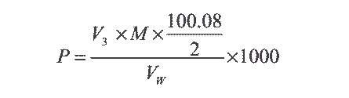
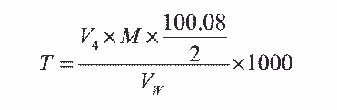
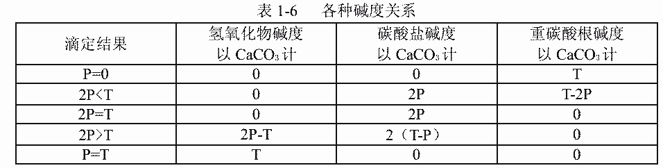

21.碱度的测定
甲 指示剂法
本方法适用于循环冷却水和天然水中碱度的测定。
1．原理
用酚酞做指示剂，用标准酸溶液滴定水样，达到终点，所测得的碱度称为酚酞碱度，此
时水样中所含全部氢氧根和二分之一碳酸根与酸化合，其反应如下：
OH-+H+=H2O
CO32-+H+=HCO3-
在滴定酚酞碱度的水样中加入甲基橙指示剂，继续用标准酸溶液滴定达到终点时（包括
酚酞碱度的用量）， 所测得的碱度称为甲基橙碱度，也称总碱度，此时水样中所含重碳酸根
全部被中和，其反应如下：
2．试剂
２． 1 0.1%甲基橙水溶液。
２． 2 0.5%酚酞 50%的乙醇溶液。
２． 3 溴甲酚绿一甲基红指示液。
取 3 份 0.1%溴甲酚绿乙醇溶液与 1 份 0.2%甲基红乙醇溶液混合。
２． 4 0.1mol/L 盐酸标准溶液
2． 4． 1 配制：量取 9mL 盐酸（优级纯）注入 1000mL 水中。
2． 4． 2 标定：称取 0.2g 于 270～300℃灼烧至恒重的基准无水碳酸钠，称准至 0.0002g。
溶于 50mL 水中，加 10 滴溴甲酚绿一甲基红混合指示液，用 0.1mol/L 盐酸
溶液滴至溶液由绿色变为暗红色，煮沸 2 分钟，冷却后继续滴定至溶液呈暗
红色，同时做空白试验。
2． 4． 3 计算。
盐酸标准溶液的摩尔浓度 M（摩尔/升）按下式计算：
式中：G——无水碳酸钠之重量，克；
V1——盐酸溶液之用量，毫升；
V2——空白试验盐酸溶液之用量，毫升；
105．99——碳酸钠的摩尔质量，克/摩尔。
3．仪器
滴定管：10mL 微量滴定管。
4．分析步骤
4．1 酚酞碱度的测定
吸取 100mL 水样于 250mg/L 锥形瓶中，加三滴酚酞指示剂，若不显色，说明酚酞碱度为
零，若显红色，用 0.1mol/L 盐酸标准溶液滴定至红色刚好褪去为终点，记录盐酸标准溶液
用量 V3。
4． 2 总碱度的测定
在测定酚酞碱度后的水样中，再加入 1 滴甲基橙指示剂，继续用 0.1mol/L 盐酸标准溶
液滴定至刚好出现橙红色为终点。记录下盐酸标准溶液的用量（包括酚酞碱度用量） V4。
5．分析结果的计算
５． 1 水样中酚酞碱度 P（毫克/升，以 CaCO3 计）按下式计算：

式中： V3——用酚酞指示剂时，滴定所消耗盐酸标准溶液的体积，毫升；
M——盐酸标准溶液摩尔浓度，摩尔/升；
100． 08——碳酸钠的摩尔质量，克/摩尔。
VW——水样体积，毫升。
5． 2 总碱度（甲基橙碱度）的计算：
水样中总碱度 T（毫克/升，以 CaCO3 计）按下式计算：

式中： V4——用甲橙基指示剂时，滴定所消耗盐酸标准溶液体积，毫升；
M——盐酸标准溶液摩尔浓度，摩尔/升；
100． 08——碳酸钙的摩尔质量，克/摩尔。
VW——水样体积，毫升。
5． 3 设水中的碱度全部由氢氧化物、碳酸盐、重碳酸盐形成，并认为不存在其它弱
无机酸和有机酸，并假定氢氧化物与重碳酸根不共存的条件下，水中氢氧化物、碳酸根、重
碳酸根的关系如表 1-6 所示。
6．允许差
碱度在 25～250mg/L（以 CaCO3 计）的范围内，平行测定两结果差不大于 2.5mg/L。

8．结果表示
取平行测定两结果算术平均值，作为水样的碱度。
乙 电位法
本方法适用范围同甲法。
1．原理
用标准酸溶液滴定到 pH=8.3 时所测定的碱度称酚酞碱度，继续滴定至 pH=4.5 时，所
测定碱度（包括前者的酚酞碱度）称为总碱度。其反应式同甲法。
2．试剂
同甲法。
3．仪器
３． 1 自动电位滴定仪： ZD－型或酸度计。
３． 2 电磁搅拌器。
３． 3 饱和甘汞电极。
３． 4 pH 玻璃电极。
３． 5 微量滴定管： 10mL。
4．分析步骤
４． 1 酚酞碱度测定
吸取 100mL 水样于 250mL 烧杯中，按 pH 测定法的操作步骤对仪器进行定位，并测定
水样 pH 值，若 pH>8.3 则用 0.1mol/L 盐酸标准溶液滴定至溶液的 pH=8.3，记录盐酸标准溶
液的消耗体积 V3（毫升）。 若 pH<8.3 则不需滴定， P=0。
４． 2 甲基橙碱度的测定
在滴过酚酞碱度的水样中，继续用 0.1mol/L 盐酸标准溶液滴定至 pH=4.5，记录下盐酸
标准溶液总的消耗体积 V4（毫升）（ 包括 V3 的含量）。
5．计算
同甲法。
6．允许差
平行测定两个结果差，不大于 2.5mg/L（以 CaCO3计）。
7．结果表示
同甲法。